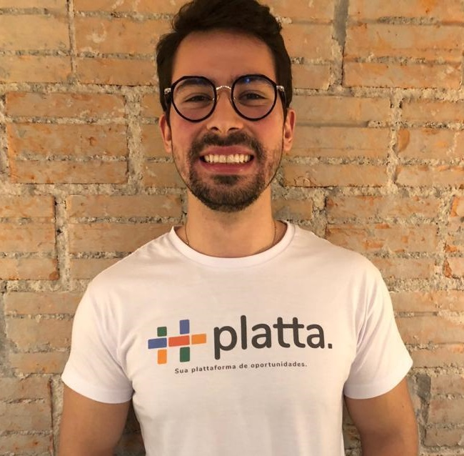

O que e TEDx?
O TEDx é um evento organizado de forma independente a fim de levar um modelo de compartilhamento no padrão TED Talks a áreas mais distantes com a intenção de disseminar conhecimento à várias comunidades. O objetivo do TEDx é compartilhar grandes ideias e dar espaço à pessoas que queiram impactar positivamente a vida de outras. Esse projeto ocorre em forma de palestras rápidas de até 18 minutos e diversas apresentações culturais em um único dia.
TEDx ParqueBarigui
Ideias que transformam geracoes
Convidamos você a um grande evento com o tema “Ideias que impactam gerações” no dia 28 de Março de 2019. O Salão de Atos do Parque Barigui será palco de um momento único. Iremos trazer a você grandes nomes como Laís Leão, Isabela Bonet, Jacson Fressatto, Felipe Hayashi, Marcel Malczewski e muito mais para lhe proporcionar uma imersão em grandes ideias.
As melhores idealizações são apenas concepções se permanecem no papel. Nesse contexto, queremos expor ao máximo de pessoas possível aquilo no qual acreditamos. Além da plateia presente, o TEDxParqueBarigui recebe você no sofá da sua sala ou na sua mesa de escritório em uma transmissão ao vivo que te deixará tão próximo quanto as capivaras do Barigui.
Onde & Quando
28 de Março de 2019Das 19h às 24h
Salão de Atos de Parque Barigui - Al. Ecológica Burle Marx, S/N - Santo Inacio, PR, 82010-715
Palestrantes
Para realizar o TEDxParqueBarigui, contamos com um time de peso para palestrar no evento compartilhando suas histórias e ideias que impactam a sociedade.
Isabela Bonet
Graduada em Administração pela Universidade Federal do Paraná, pós-graduanda em Empreendedorismo e Negócios Sociais na FAE Business School, certificada em Inovação Social pela Northwestern University - Kellogg School of Management.
No time de liderança da ASID Brasil e com 5 anos de experiência e atuação no setor de impacto social, foi responsável pelo desenvolvimento das metodologias de impacto da ASID, expansão dos negócios para a cidade de São Paulo e pelo gerenciamento de mais de 200 projetos em todo o Brasil na temática da inclusão de pessoa com deficiência.
Laís Leão
Laís Leão tem 25 anos, é Arquiteta Urbanista, especialista em Administração Pública, Diretora Executiva e Fundadora da inCities - Rede para Cidades Inclusivas e única brasileira selecionada como Jovem Líder para o European Development Days 2018 da União Européia. Laís desenvolve ações e promove a conscientização sobre as complexas e inseguras relações entre o espaço urbano e as mulheres, buscando desenvolver cidades mais seguras e inclusivas para todos.


Jacson Fressatto
Fundador e CEO (Chief Executive Office) da LAURA, plataforma de Inteligência Artificial, é arquiteto de sistemas, focado no desenvolvimento de tecnologias de data analitycs, Machine Learning (aprendizagem de Máquina), micro serviços e autônomos usando as metodologias de gestão ágil e organizações exponenciais (ExpO). Tornou-se especialista em segurança corporativa trabalhando em grandes empresas como a IBM e a Volvo onde foi responsável por mais de USD 18 milhões de savings em fraudes sistêmicas. Fundou duas empresas de tecnologia e uma de consultoria em investigação corporativa. Um pai com uma meta audaciosa: impactar positivamente 1 bilhão de vidas.
Arthur Igreja
Arthur é um dos A’s da plataforma AAAcom Ricardo Amorim do Manhattan Connection e Allan Costa.
Palestrante em mais de 120 eventos por ano em eventos como Rock in Rio Academy e TEDx no Brasil, EUA, Europa e América do Sul.
Experiência profissional e acadêmica em mais de 25 países, Masters in International Business nos EUA pela Georgetown University, corporate Masters of Business Administration na Espanha pela ESADE, mestrado Executivo em Gestão Empresarial pela FGV/EBAPE, certificações executivas em Harvard & Cambridge, pós-MBA em Negociação pela FGV e MBA pela FGV/Ohio University.


Felipe Hayashi
Mestre em Direito Econômico e Socioambiental pela Pontifícia Universidade Católica do Paraná. Especialista em Ciências Criminais e Processo. Graduado em Direito pela Universidade Federal de Santa Catarina. Professor de Compliance da FAE Business School. Autor do livro “Corrupção: Combate Transnacional, Compliance e Investigação Criminal”. Delegado de Polícia Federal. Chefe da Delegacia de Repressão a Corrupção e Crimes Financeiros no Paraná.
Marcel Malczewski
27 anos de experiência em empreendedorismo. Co-fundador, membro do Conselho de Administração e então CEO (2001-2009) da Bematech S/A.
Empreendedor do Ano no Setor de Tecnologia pela E&Y e Revista Exame em 1999. Desde 2010, quando deixou o cargo de CEO, passou a trabalhar com investimentos em Venture Capital, sendo ainda membro do Conselho de Administração da Bematech (2009-15) e Presidente (2010-11). De 2011 até hoje passou a atuar como investidor através da M3 Investimentos e da Trivèlla M3 Investimentos.


Ana Guerrini
Ana Guerrini é Diretora de Políticas Públicas e Pesquisa da 99. Com mais de 12 anos de experiência na área, a executiva atuou pela Masterplan como consultora sênior. Ana também teve participações no desenvolvimento e coordenação de programas para o governo de São Paulo e Rio de Janeiro, promovendo ações de participação social, transparência, inovação tecnológica e integridade pública nas prefeituras. Atuou como consultora na Organização dos Estados Americanos, encarregada da seção Guia de Mecanismos do Brasil para a Promoção da Transparência e Integridade. Formou-se em Economia pela Universidade de São Paulo e estudou Políticas Sociais na Universidade de Oxford.
Marcos Calazans
Todos os dias tomamos ações e reações que causam efeitos diretos e indiretos no nosso caminho profissional e pessoal. Marcos Calazans é fundador do Banco de Franquias, e irá abordar as escolhas e as decisões tomadas durante sua vida que o trouxeram até aqui, apresentando uma perspectiva futura que depende das nossas ações de hoje. Conta também como foi reconhecido pela revista Forbes como um dos jovens mais brilhantes do Brasil, parte da lista Forbes Under 30.

Nossa Equipe
Alexandre Fraletti
Licensee
Guilherme Pereira
Licensee
Beatriz Makyiama
Bianka Amorim
Gabriel Kolbe
Produção e execução
Gustavo Tacla
Corresponsável de Captação
João Marchesini
Lize de Paula

Miguel Segundo
Plauto Neto
Curadoria
Programação
19h45 - 20h10
Abertura
20h10 - 20h30
Talk 01 - Laís Leão
20h30 - 20h45
Talk 02 - Felipe Hayashi
20h45 - 21h00
Talk 03 - Marcos Calazans
21h00 - 21h15
Talk 04 - Isabela Bonet
21h15 - 21h40
Break
21h40 - 22h00
Talk 05 - Arthur Igreja
22h00 - 22h15
Talk 06 - Marcel Malczewski
22h15 - 22h30
Talk 07 - Ana Guerrini
22h30 - 22h45
Talk 08 - Jacson Fressatto
22h45 - 23h00
Encerramento e agradecimentos